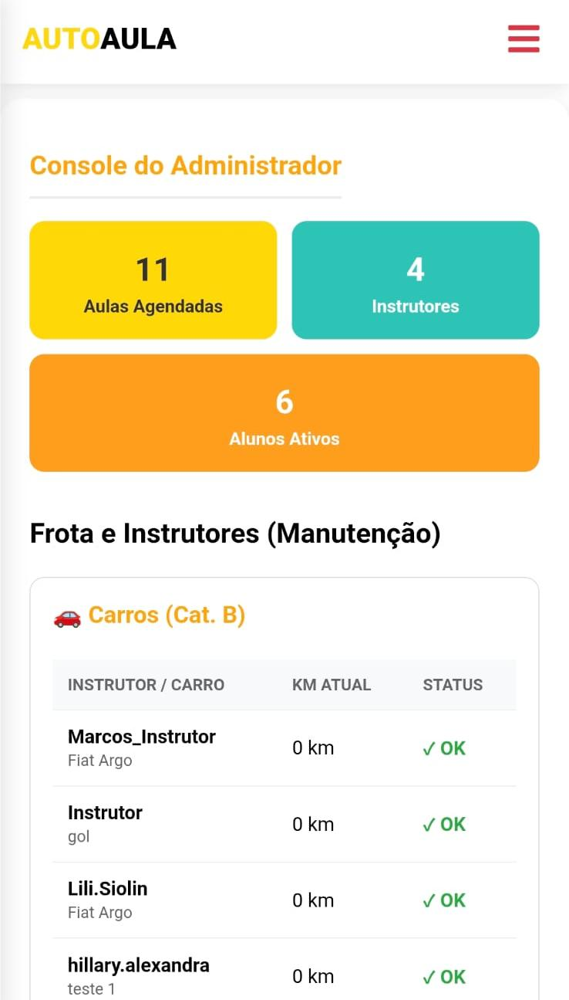
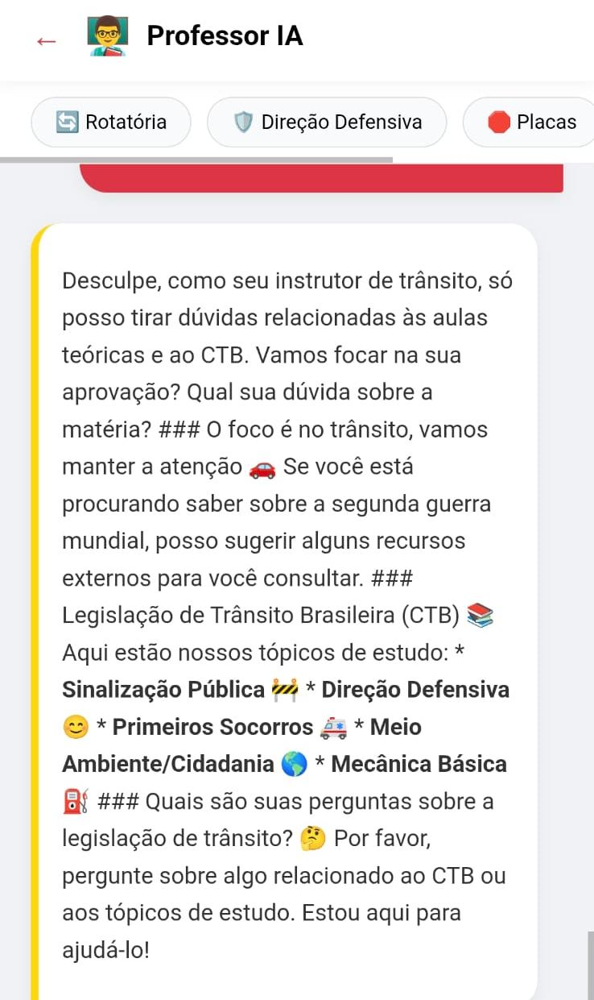

Projetos em Destaque

Sistema Auto Escola
Gestão de frotas e fluxos administrativos para Centros de Formação de Condutores (CFC).

IA Instrutora de Trânsito
Interface de IA integrada focada no ensino de aulas teóricas, resolvendo dúvidas sobre o Código de Trânsito Brasileiro em tempo real.
Trajetória & Formação
Técnico em Desenvolvimento Web e Mobile
Escola do Futuro de GoiásFormação técnica focada em tecnologias Full Stack e mobile.
Pesquisa de Inovação (990 Horas): Desenvolvimento de um mentor baseado em Inteligência Artificial operando via WhatsApp, voltado ao ensino de programação web.
TI & Automação
Experiência ProfissionalAtuação em administração de redes e automação de servidores, com foco em eficiência e segurança de infraestrutura.